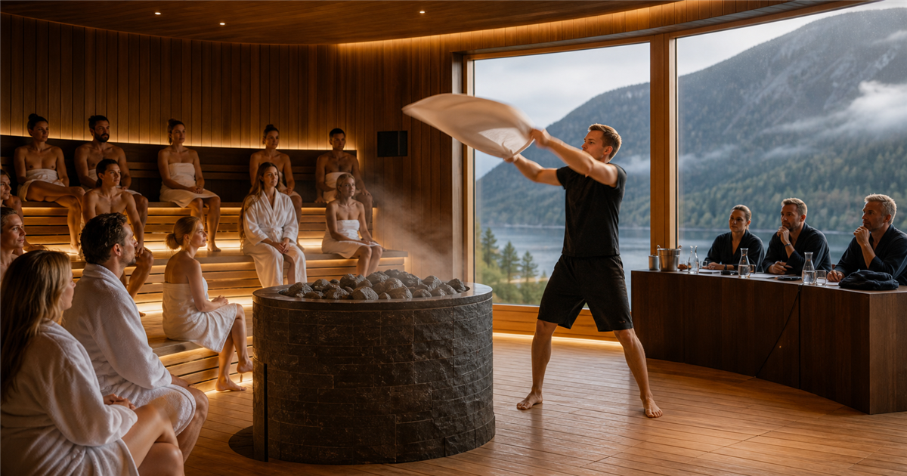

Wellness / Sauna
Modern Classic Cup
Modern Classic Cup is a Classic Aufguss competition: sauna masters turn heat, scent, steam, towel technique and music into a judged sauna ritual.
 More sauna eventsBack to Sauna
More sauna eventsBack to SaunaSee the full sauna topic list.
Why follow itHeat culture is becoming travel culture
Modern Classic Cup is useful because it explains modern sauna culture from the inside: not just sitting in heat, but how a skilled sauna master guides scent, steam, temperature and atmosphere.
FormatProgramme plus bathing sessions
Expect scheduled Aufguss routines, judging, finalist sessions and spa access planning. The important thing is capacity: each performance happens inside an actual sauna room.
Recent editions
| Year | Host / place | Country |
|---|---|---|
| 2026 | Larvik | |
| 2025 | Archive TBC | |
| 2024 | Archive TBC | |
| 2023 | Archive TBC | |
| 2022 | Archive TBC | |
| 2021 | Archive TBC |
Planning noteVerified: Aufguss WM lists 1-4 October 2026 at Farris Bad, Norway.
Official listings place the 2026 final at Farris Bad, 1-4 October. Check the organizer before booking because session access and spa entry can be separate.
Notable moments
- Host context:
 Norway.
Norway. - Core visitor value: seeing how scent, heat and towel technique become a structured sauna performance.
- Best checked close to event: session booking, spa access, textile rules, age limits and cooldown areas.